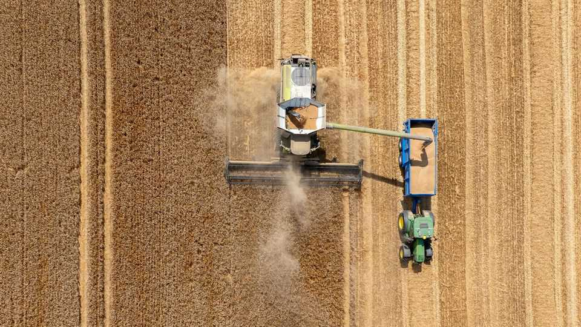
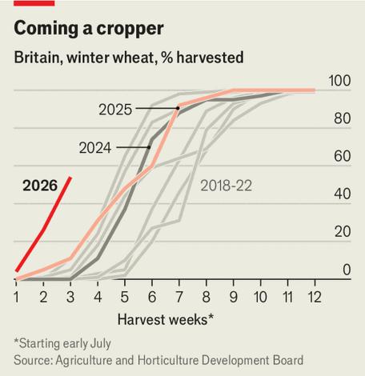

As the climate hurts Britain’s wheat farmers, it’s time to adapt
They may need different crop varieties and more irrigation

Aug 6th 2026
“I can’t remember ever finishing a harvest in July,” says Mark Weekes, a farmer who grows 700 acres of winter wheat, barley and oats near Exeter. Usually Mr Weekes cuts his crop about three weeks later. But hot, dry weather has ripened his grain faster and left it in a worse state. His fields have yielded a third less wheat and nearly two-fifths less barley than normal. “A lot has just shrivelled,” he says.
British crops have been bred to grow in a moderately wet and mild climate. This year’s weather has been anything but. A very wet winter sapped nutrients from soils. A very dry summer sapped moisture. In July Britain had just 10% of the typical rainfall for the month. The Environment Agency declared half of England in drought.

Across Britain winter wheat has been cut early—its earliest harvest since 1976. Over half had been harvested by July 26th, compared with 11% a year earlier, according to the Agriculture and Horticulture Development Board (see chart). Wheat yields are down by nearly 16% on average, compared with the country’s ten-year mean. In the east of England, where soils are light, farmers have reported yields down by half.
Shoppers are unlikely to see shortages, though. About half of the wheat grown in Britain is used for animal feed. Much of the rest is milled for bread and biscuits. Britain already imports about 15% of its milling wheat, and can import more. The real cost will be borne by farmers. Last year’s drought cost arable farmers over £800m ($1.1bn) in lost earnings, for example—nearly a quarter of the cereal sector’s annual value, according to the Energy and Climate Intelligence Unit.
“Our current situation is analogous to when British settlers landed in Australia in 1788 and saw their crops flounder in the heat,” says Gail Taylor of University College London. Wheat was then bred to withstand dry conditions; it is now Australia’s most valuable crop. British farmers can adapt, too. They can plant varieties more resilient to drought. And rather than relying on rain they could use irrigation technology, as in California, typically deemed too costly—until now. ■